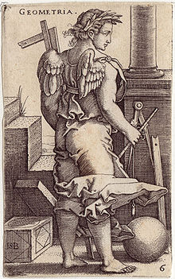

La geometría (del latín geometrĭa, y este del griego γεωμετρία de γῆ gē, ‘tierra’, y μετρία metría, ‘medida’) es una rama de las matemáticas que se ocupa del estudio de las propiedades de las figuras en el plano o el espacio,1 incluyendo: puntos, rectas, planos, politopos (que incluyen paralelas, perpendiculares, curvas, superficies, polígonos, poliedros, etc.). Es la base teórica de la geometría descriptiva o del dibujo técnico. También da fundamento a instrumentos como el compás, el teodolito, el pantógrafo o el sistema de posicionamiento global (en especial cuando se la considera en combinación con el análisis matemático y sobre todo con las ecuaciones diferenciales). Sus orígenes se remontan a la solución de problemas concretos relativos a medidas. Tiene su aplicación práctica en física aplicada, mecánica, arquitectura, geografía, cartografía, astronomía, náutica, topografía, balística etc., y es útil en la preparación de diseños e incluso en la fabricación de artesanía.
| Bibliografía |
|---|
| Boyer, C. B. (1991) [1989]. A History of Mathematics (Second edition, revised by Uta C. Merzbach edición). Nueva York: Wiley. ISBN 0-471-54397-7. |
| Nikolai I.Lobachevsky, Pangeometry, translator and editor: A. Papadopoulos, Heritage of European Mathematics Series, Vol. 4, European Mathematical Society, 2010. |